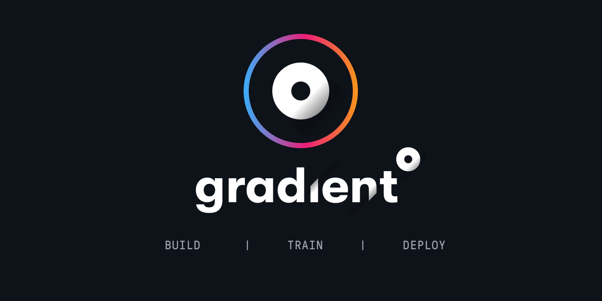
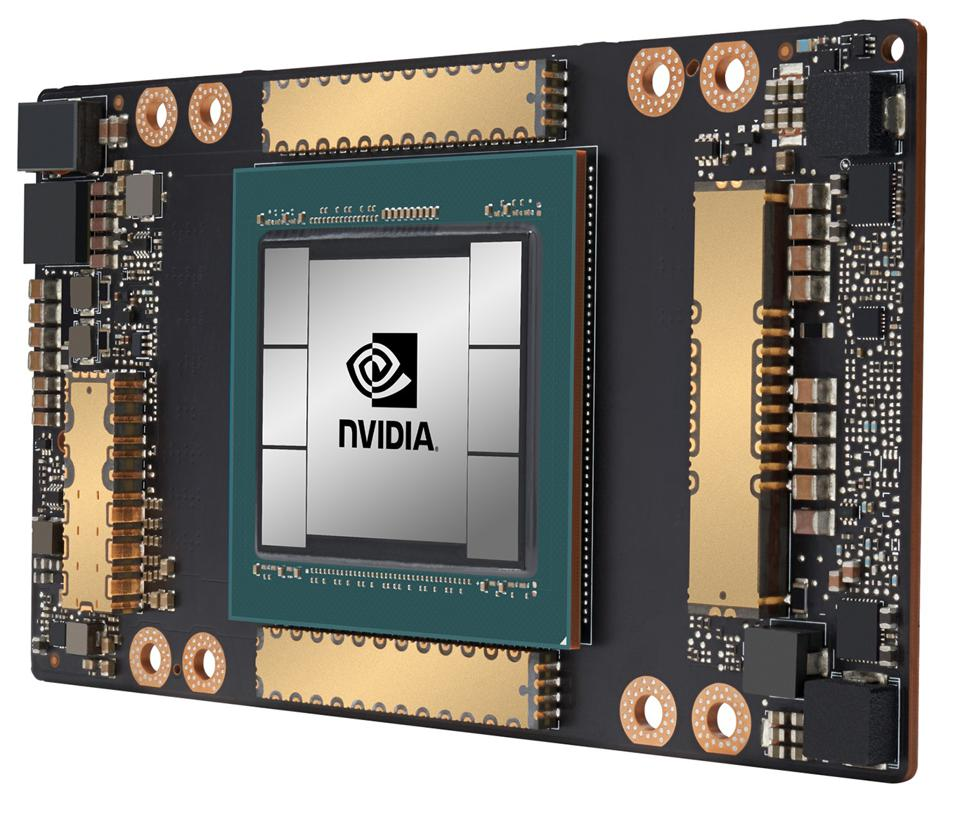
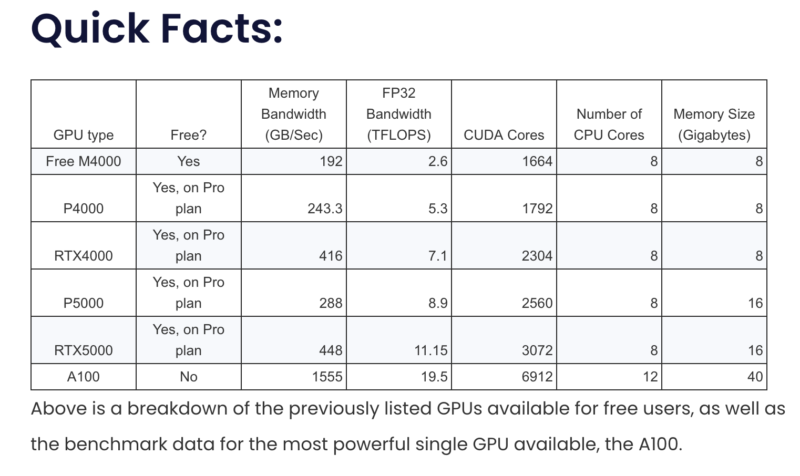
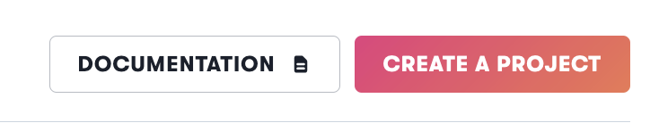
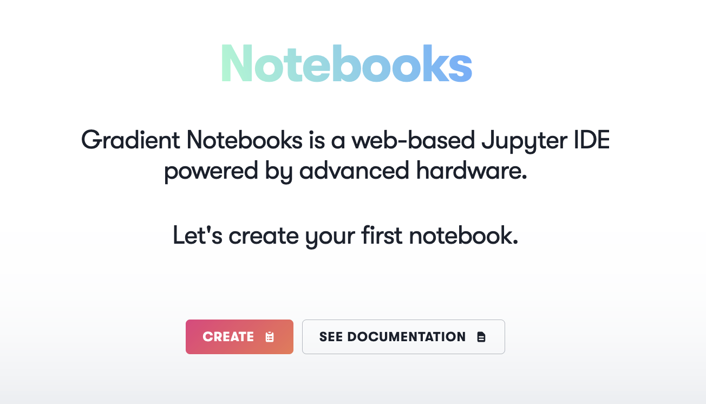
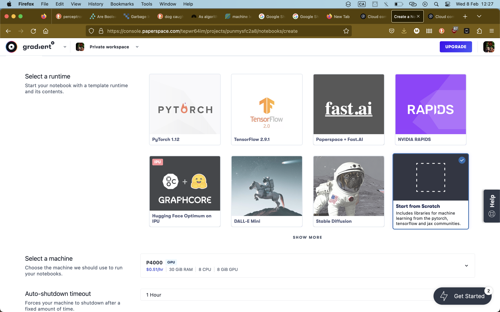
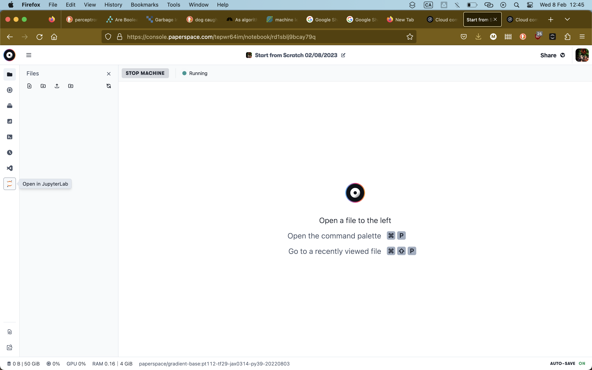

1 + 12

(Short answer: You don’t! but it’s much faster because of parallel processing on a GPU)
- Deep learning models are built using neural networks. Training of a neural network involves calculating parameters and activations at each node of the network. Since each of these operations is fairly small, they’re self similar,and there are many of them, it is more efficient to run these operations in parallel on the GPU.

http://www.paperspace.com


This will create a jupyter notebook with some machine learning specific libraries already installed. All of the other runtimes you can see can still be installed if we select ‘start from scratch’, and we’ll see how to do this for the fast.ai runtime which we’ll use to train our model.
If this option isn’t available then choose free CPU - we can always change it later


The above cells executed python code using a python interpreter.
We can also execute code on the computer’s bash terminal: try these
!ls
The ! sends the code to the computer’s bash shell interpreter instead of the python interpreter.
!ls ..
!ls ../..
The type of cell can be changed from a code cell into a markdown cell where we can write notes, display images, links etc.
Try hitting esc, then pressing m. Cell contents will now be displayed as markdown.
To get back to code mode, hit esc, then press y
Try some of the following commands one by one to see what happens.
!ls
!ls ..
!python --version !pip install torch
!pip list
import numpy as np
np.random.randn(6)
Getting set up with cloud computing services can seem daunting at first, but it’s actually pretty straightforward.
You can run all the same code on your laptop or on any other notebook hosting service.
In the next section we’ll write code in python and take advantage of some libraries which will let us train a deep learning model using the GPU we now have access to.